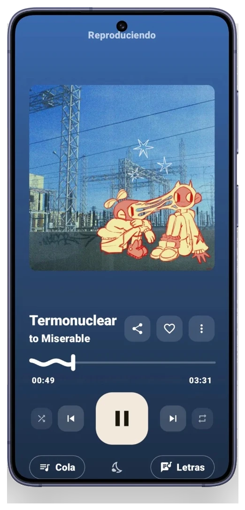
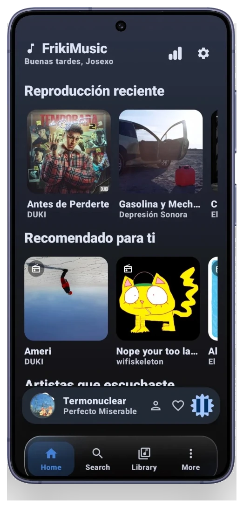
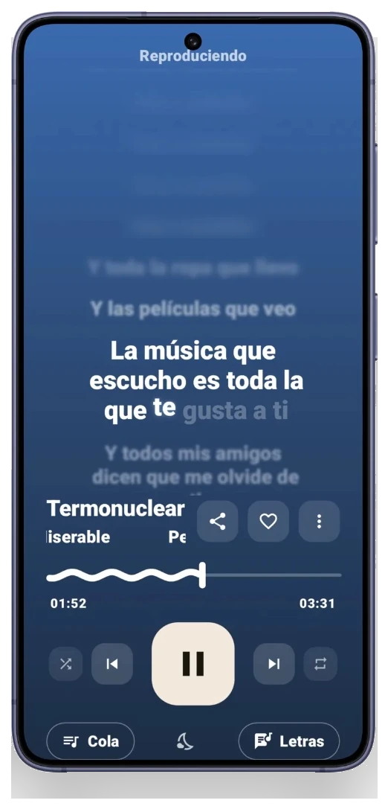
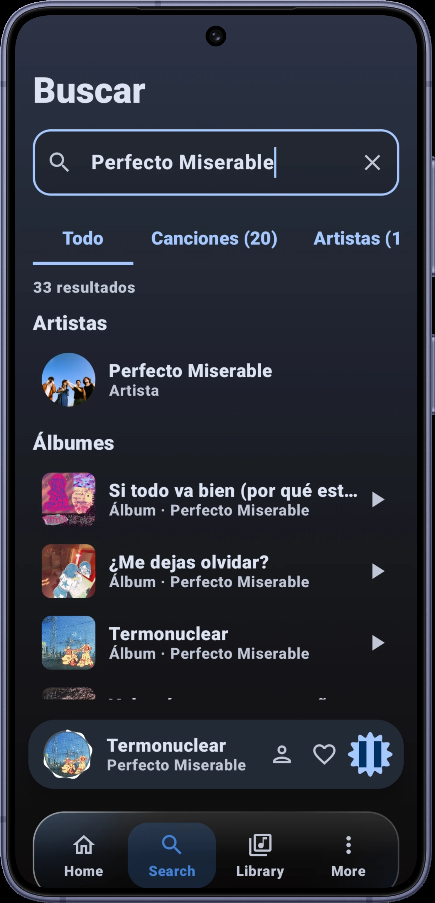
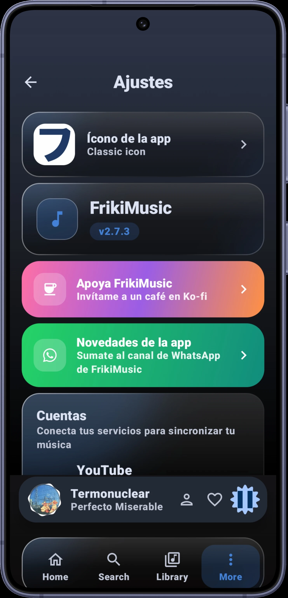
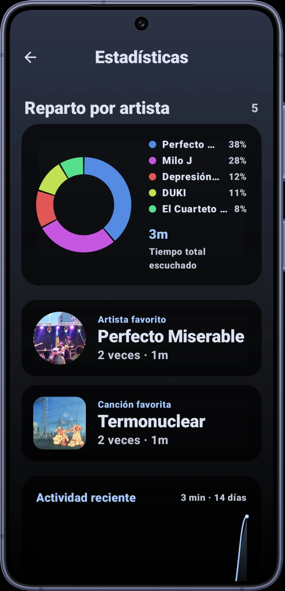

Letras traducidas y sincronizadas
Cada canción muestra su letra línea a línea, con la estrofa activa en primer plano y traducción sin salir del reproductor.
Aplicación para Android
Reproductor de música gratis, con interfaz hecha con Material 3, para Android.
Letras traducidas y sincronizadas línea a línea, streaming y descargas, y una interfaz que cambia de color según lo que estás escuchando.
Ocho decisiones concretas de diseño, no una lista de adjetivos.
Cada canción muestra su letra línea a línea, con la estrofa activa en primer plano y traducción sin salir del reproductor.
La interfaz toma el color que más se repite en la carátula del álbum, no el tono más vivo, y lo calcula al instante.
Reproduce o descarga canciones directamente, sin depender de una biblioteca local limitada.
Desliza hacia arriba para ver la letra, a los lados para cambiar de canción y hacia abajo para cerrar el reproductor.
Comparte en tiempo real lo que estás escuchando con tu servidor, sin configuración adicional.
Consulta qué artistas, álbumes y canciones dominan tu tiempo de reproducción.
Conecta ambas cuentas desde Ajustes para sincronizar tu biblioteca y tu actividad.
Componentes, tipografía y movimiento siguiendo las guías de Material Design 3, sin plantillas genéricas.
Un vistazo real a las tres pantallas donde pasarás más tiempo.
Portada protagonista, controles amplios y un color de fondo que nace de la propia carátula. La barra inferior usa un acabado líquido y discreto.
Reproducción reciente y recomendaciones ordenadas en filas simples, sin carruseles innecesarios, con tus artistas más escuchados siempre a mano.
La línea activa se distingue del resto por peso y contraste; las adyacentes se atenúan con un desenfoque progresivo que sigue el ritmo de la canción.
Resultados agrupados por artistas, álbumes y canciones al instante, con pestañas para filtrar y saltar directo a lo que buscas.
Ícono de la app, cuentas conectadas y todo lo demás en un panel de ajustes claro, sin menús escondidos ni pantallas de más.
Reparto por artista, artista y canción favoritos, y tu actividad reciente, todo de un vistazo en tu propia pantalla de estadísticas.






En desarrollo activo

Josexo
Desarrollador de FrikiMusic
Escríbeme tu comentario, idea o problema.
La última versión estable, lista para instalar.
Paquete de instalación directa (APK), fuera de Google Play.
Requiere Android 8.0 o superior.
Versión de escritorio para Windows.
Versión de escritorio para distribuciones Linux.
Versión de escritorio para Mac.